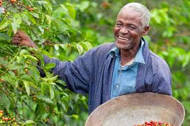

Improving quality of coffee and outcomes in the coffee value chain
 Buddu Coffee
Buddu Coffee
Impact at a Glance
We drive impact by empowering coffee farmers, the cooperatives and extension agents who serve them, and the
governments that sustain the policies and systems that support them. We rely on real‑time data, human
insights, and a growing body of evidence to expand market access, improve productivity, and strengthen the resilience of coffee communities in different regions of Uganda.
BUDDU FARMERS, TRADERS AND PROCESSORS
OUR FARMERS
OUR TRADERS
OUR PROCESSORS
Impact by Area
We drive impact by designing solutions with and for coffee farmers, and the extension agents, cooperatives, and district governments that support them, and using data to improve productivity, quality, and market access.
Specifically our solutions drive impact in three areas:
Market seeking
A significant number of coffee farmers in Uganda lose income due to delays in selling at the right time and to the right buyers. GROW empowers farmers with real‑time market intelligence via SMS and mobile alerts, helping them make informed decisions about when and where to sell. Farmers are supported to adopt key practices that lead to better prices, such as proper drying, storage, and cooperative aggregation. We share feedback from farmers with district governments and buyer networks to make market systems more transparent and responsive to farmers’ needs.
Quality & skilled support
A significant share of value loss in Uganda’s coffee sector stems from gaps in post‑harvest handling, inconsistent grading, and limited emergency response during pest or weather shocks. FIELDS builds the capacity of frontline extension agents, cooperative trainers, and government agricultural officers to deliver timely, hands‑on support through continuous, simulation‑based training that takes place in the field and at processing hubs. We share data on agent performance and farmer outcomes with district agricultural managers, helping them track and address skills and knowledge gaps on a real‑time basis.

Sustainable Financing
Our vision of an “end game” at scale is our district government partners, together with farmer cooperatives, leading and sustainably financing cost‑effective innovations within Uganda’s coffee value chain. We achieve this by helping them better budget for high‑impact solutions that improve market access, quality, and resilience, while generating real‑time data that helps them allocate limited resources more strategically and transparently.
Data-driven impact
Given the complexity of the coffee value chain, we field data and insights from across a farmer’s journey—from seedling to sale—to monitor the connected, yet often siloed, gaps that affect productivity and profitability. The research we conduct and the data tools we co‑design with our government partners help inform better policies, improve extension services, and direct limited resources to where they are most needed. We monitor our impact on outcomes through national agricultural information systems, such as the Uganda National Agricultural Information System (NAIS).
What can we learn from our Dashboards?
We track what farmers ask us and self‑report on GROW to understand market access barriers, optimize buyer referrals, and better understand the quality of extension services from the farmer’s perspective. We also monitor how extension agents and cooperative trainers are performing through FIELDS to identify gaps in critical skills, such as post‑harvest handling, pest management, and certification standards—so we can target support where it is needed most.

Influencing Decision-making through Research
Research is the backbone of how we design solutions, and our findings are guiding how district governments, cooperatives, and extension services improve productivity, quality, and market access across Uganda’s coffee value chain.We rely on a mixture of participatory research approaches to understand the contextual challenges facing coffee farmers, traders, and processors: Human‑Centered Design, in‑depth interviews, and implementation research.
Impact Reports
You can find our quarterly and annual impact reports below, or sign up to receive these straight into your inbox.